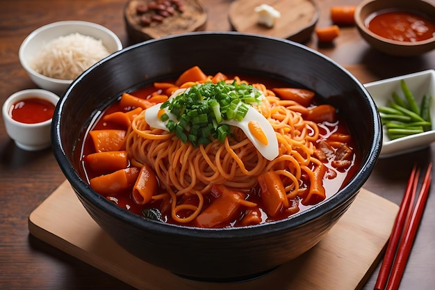

Tteokbokki.html
Dabokis
Home
A taste of umami and has a very settle spice level
Red vabrant broth with rice cakes, fish cake and egg
recipe information
Ingredients
- Vegetable broth
- Korean Chilli powder 1 - 2 table spoons
- Korean hot pepper paste teaspoon - 2 table spoons
- Rice Noodle 1 pack of 10 - 20 or more
- Fish cake 4 - 5 fish cakes
- Scallions 3 4 inch pieces
- Kombu Seaweed
- egg 1 - 2 egg
Instructions
- Heat pot of vegetable broth till it starts to boil. simmer and add korean hot pepper paste, chilli powder, now stir.
- then add rice noodles and fish cake
- When Rice noodle and fish cake is cooked add scallions and kombu and simmer for 2-3 min
- Add egg hard boiled runny yolk or fried egg.